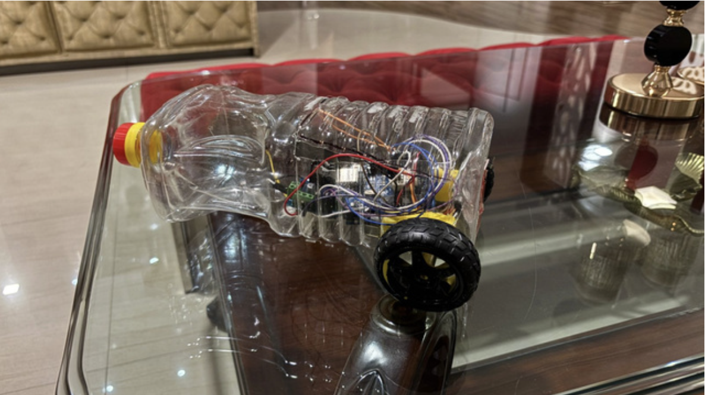
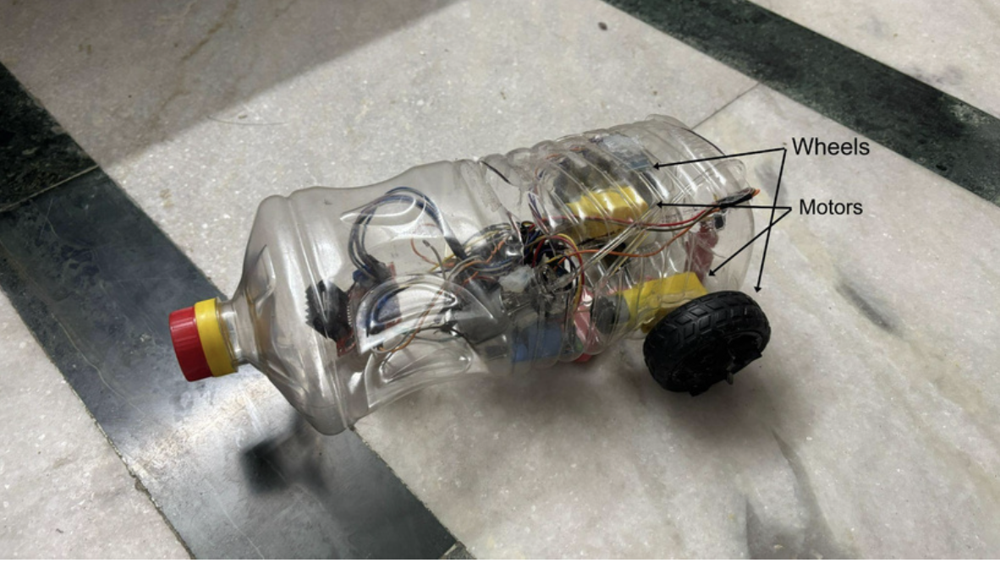

Automated pneumatic inflation clamps secure inflatable pontoons onto automobile side sills within 2 minutes.
Multi-chamber dual-pontoon architecture engineered to support full-sized passenger sedans and compact SUVs safely.
Selected among top student innovators across India in the Atal Tinkering Lab Marathon for disaster relief tech.
Engineering Testing & CAD Models

Mechanical layout showing pontoon mounts, ultrasonic depth sensor positioning, and chassis stabilization brackets.

CAD detailing the quick-release lock mechanism compatible with standardized automobile jacking points.
Live test demonstration of the P.E.R.C.Y prototype navigating water obstacles with active sensor stabilization.
The First-Responder Mobilization Gap
Severe urban flooding across Indian metropolises and coastal regions paralyzes conventional rescue logistics within hours. Heavy emergency boats require flatbed transport that cannot penetrate waterlogged streets, while stranded citizens in standard civilian automobiles face fatal engine submergence, electrical short-circuits, and hydrostatic lock.
P.E.R.C.Y was engineered as a rapid-retrofit conversion kit that equips pre-existing emergency fleet cars, municipal patrols, and civilian vehicles with modular amphibious capability — eliminating the need for dedicated multi-million-dollar boat deployment delays.
- High-durability Kevlar-reinforced PVC dual pontoons
- Ultrasonic sonar array for underwater debris & depth sensing
- Paddle-fin wheel retrofits transferring engine torque to water thrust
- Emergency bilge sensor & automated CO2 cartridge deployment
Validated on National Stages
National Finalist · ATL Marathon 2024-25
Represented P.E.R.C.Y in India's flagship nationwide innovation challenge organized by NITI Aayog's Atal Innovation Mission (AIM). Evaluated by defense and civil disaster management experts for engineering viability and life-saving utility.
2nd Place · NID Haryana Innovation Challenge
Awarded Second Position in the state-level innovation summit hosted by the National Institute of Design (NID) Haryana, praised for functional mechanical design and human-centered disaster ergonomics.